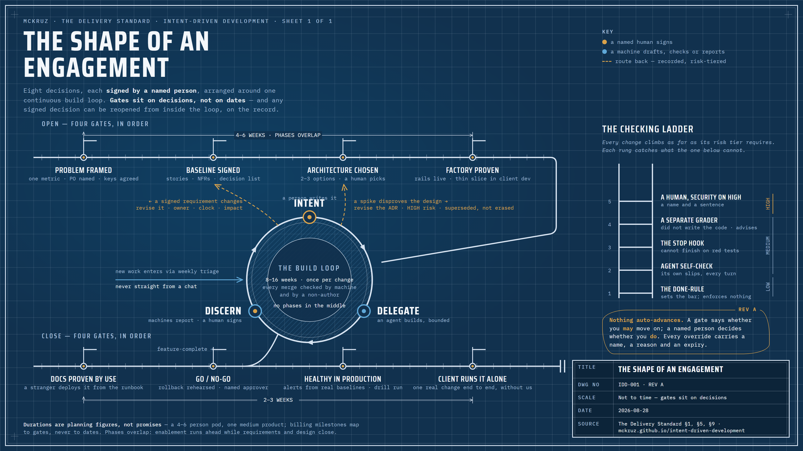

The three-minute version
For a sponsor or client executive: what this is, what you decide, what you'll see, and what happens when things change.
What this is
AI agents write code fast. That does not make software delivery faster on its own. The hard work moves to two places: saying clearly what you want, and proving that what came back is right. This standard is how a small team runs a client engagement around those two jobs.
Every piece of work, large or small, runs the same short loop. A person writes down what they want precisely enough to be checked. An agent builds it inside limits the person set. Then automated checks and a second person, never the author, prove it before anyone trusts it.
Intent
One short, testable description of one piece of work: a spec. If two people could build different things from a line, it is not ready.
Delegate
The agent proposes a plan; a person approves it; then it builds inside a set scope, a named pattern to reuse, and fixed permissions. It cannot call itself finished with failing tests.
Discern
Build, tests and coverage gate mechanically. A second AI that did not write the code grades it against the spec. A person who did not write it approves. High-risk work adds a security pass and a named signature.
The one rule underneath all of it: the machine drafts and reports; a named human decides and owns. No gate in the standard is a machine's opinion becoming a decision. A machine says whether you may advance; a person decides whether you do.
The shape of an engagement, as it actually runs
The standard is usually drawn as a line: four numbered phases, a build loop, four more phases. That picture is misleading in one important way. The phase gates are not points on a calendar; they are decisions that get signed. A decision can be reopened later, when something is learned that changes it, and reopening is itself a change with a named owner and a risk tier, riding the same loop. Drawn honestly, it looks like this:

What you decide, and what you see
Five decisions belong to the client side and nobody else. Everything else is the pod's job, reported to you as working software on a steady rhythm.
| Your decision | When | What you get before you sign |
|---|---|---|
| Who owns the product decisions. A named product owner at 4 or more hours a week, or we act as proxy and you ratify a decision log at each steering. | Discovery workshop, day one | The problem statement in your words, the one success metric and where it will be read from. |
| Whose AI account and keys. Yours by default (your contract, your audit trail), with a one-page data-flow brief for your security team. | Discovery exit | What goes to the model, what never does, where keys live, who can see usage. |
| The architecture. Two or three options with real trade-offs; your engineer co-signs the one chosen. | Design exit | Decision records you can read, a threat model, and a plan for proving the non-functional requirements. |
| Go / no-go to production. Always a person, never automatic; promotion beyond dev cannot run without a named approver. | Deployment | A rehearsed rollback, release notes drafted from what merged, smoke-test results. |
| That you no longer need us. The close gate is your team running one real change end to end without us driving. | Close | A harness audit (nothing only we understand), a named owner on your side with a deputy, our access revoked. |
What you see in between: a 45-minute steering every two weeks. A live demo in the dev environment, your success metric, the two delivery-stability figures every engineering organisation reports (how often a change fails, how fast it is recovered), and the share of agent-built work accepted without rework. Plus a five-bullet note in the off weeks. Never activity numbers: no pull-request counts, no "AI productivity" claims. Agents inflate every one of those; demos and outcomes don't.
Duration, involvement, signatures
Planning figures for a 4–6 person pod and a medium-sized product. Not promises: billing milestones map to gates, not dates. The opening phases overlap (the Setup Owner's enablement work runs ahead while requirements and design close), so Discovery through Foundation runs 4–6 weeks in total.
| Phase | Typical duration | Pod involvement | What we need from your side | What you sign |
|---|---|---|---|---|
| Discovery | About 2 weeks (10 business days), part of the 4–6 week opening | The Pod Lead runs the workshop; the Setup Owner starts enablement in parallel | Sponsor: a half-day workshop plus two 30-minute checkpoints. A candidate product owner. Security and IT from day one (procurement and access need lead time). Two to four domain experts, 45–60 minutes each. The data owner for one working session, to prove the metric can be read. | The problem statement, the PO decision, the tooling decision |
| Requirements | About 1 week (5 business days; 8–10 when the domain is heavily regulated or proxy mode adds latency) | The pod drafts with the agent; the Pod Lead enforces the definition of ready on every story | The product owner's committed hours, fully spent. Every decision-list item answered on a 2-business-day clock. Domain experts 60–90 minutes per epic area. Sponsor about 1.5 hours. | The baseline: requirements, non-functionals, epics |
| Design | About 1 week (5 business days; 8–10 with a large integration estate) | The Architect presents two or three options with concrete trade-offs | Your lead engineer for 3–5 hours across the week; they co-sign every decision record. Security 1–2 hours. Product owner about 1 hour. Sponsor 45 minutes. | The architecture and its decision records (ADRs) |
| Foundation | About 2 weeks (10 business days) | The Setup Owner builds the harness and the pipeline; the pod runs the first four small pieces of work through it | Your platform or DevOps engineer for 4–6 hours: access, branch protection, secrets, and a review of the pipeline they will operate after we leave. Security 2–3 hours. Lead engineer 4–6 hours. Product owner about 1 hour. Sponsor 45 minutes. | The factory demo: one real feature running in your dev environment |
| Build | 8–16 weeks | The whole pod: Orchestrators 90–100%, Pod Lead 50–70%, Quality Engineer 60–80%, Setup Owner 30–50% | Product owner at 4 or more hours a week on the decision list. Security sign-off on every HIGH-risk change. Domain experts as the work demands. Sponsor 45 minutes every two weeks. | Nothing per phase. Each change merges on its own gates. |
| Documentation | About 1 week (5 business days) | The agent drafts from the code and the specs; the pod diffs and corrects | One engineer who has never opened the repo, 2–3 hours, to follow the README cold. An operations engineer 3–4 hours to walk the runbook with their own permissions. Lead engineer 2–3 hours. Product owner about 1 hour. Sponsor 45 minutes. | The verification records: someone new ran it cold |
| Deployment | About 1 week | The pod beside your operators, not on the keyboard | Your platform engineer, on and off through the week. Operators 3–4 hours to rehearse deploy, roll back, redeploy themselves. Product owner 2–3 hours on the rollout shape. Security 1–2 hours. Sponsor 1–2 hours, informed and asked. | Go / no-go |
| Monitoring | About 2 weeks, inside hypercare | The pod builds alerts from measured baselines and runs the incident drill | Operations co-author what "healthy" means; it is the thread of the phase. Platform engineer 3–4 hours. Data or reporting lead 2–3 hours. Security 1–2 hours. Product owner about 1 hour. Sponsor 45 minutes. | Thresholds confirmed against real data; the drill record |
| Close | About 3 weeks | The pod steps back: hands off the keyboard in week one, out of the room by the gate | Your engineers run at least three real changes with our Checkers, then one solo. Your named Setup Owner merges a harness change of their own. Operations 2–3 hours on access revocation. Sponsor 1 hour. | The close gate: one real change shipped without us |
What happens when things change
Because they will. The standard's sequence is honest about order, not rigid about time. Four things routinely happen mid-engagement, and each has a route that leaves a record. None of them is "start the phases over."
A new need appears during build
It goes to the weekly triage like any story: written precisely, its risk tiered, its silent decisions put on the decision list for you to answer. Then it rides the loop. This is the normal case, and the loop exists for it.
Something learned disproves the design
A bounded experiment, a spike, produces written evidence. The design decision is revised as a high-risk change with a named signature; the old record is marked superseded, not erased. What is forbidden is code that silently stops matching the decision.
A signed requirement changes
The requirement is revised in place with an owner, a reason and a two-business-day clock; the affected downstream artifacts are listed; the phase's gate is re-run so the change is visible rather than absorbed.
A gate fails
Nothing advances. The gate report says what is missing; the fix rides the loop; the gate runs again. A true emergency merge past a gate takes two named people, a label and a retro item.
The full routes, who owns each, what is recorded, and what it costs →